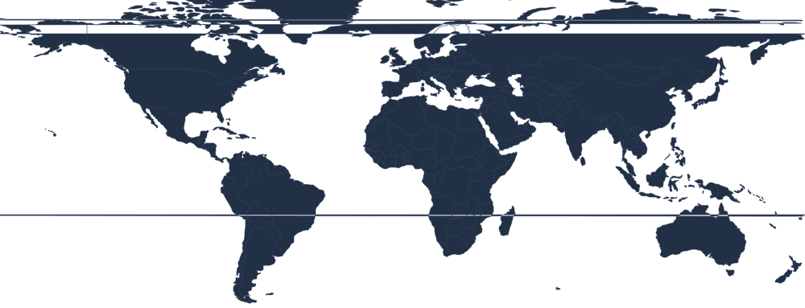

Loading weather…
Next 12 hours
示範相片 · sample
✎
未來五日 · Next 5 days
兩週日程
Next 2 weeks
示範 · sample
新聞
News · 香港 · UK · World
▶ 播放

更多新聞 · More news
早晨簡報 · Brief
EN / 中
香港角落
Hong Kong corner
▶ 直播 Live
載入香港天氣… Loading HK weather
今日好書
Book of the day
▶ 讀出嚟
Loading…
能源
Energy · Octopus
示範 · sample
Premier League
英超積分榜
Spotify
YouTube
Loading table… 載入中
生日倒數
Birthdays
示範 · sample
輕按顯示 · Tap to wake
留言 · Add a note
取消 Cancel
儲存 Save
📌 新留言 · NEW MESSAGE
收到 👍 Got it
📌 留言板 · Message board
家人手機都可以貼留言上嚟 · Family can post from their phones
關閉 Close
貼上 Post